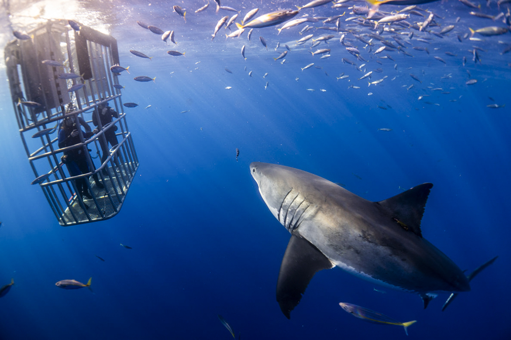

Human–shark interactions
Encounters between great white sharks and people are rare compared with the number of hours humans spend in the ocean. Most incidents appear to be investigative bites rather than deliberate attempts to consume humans as prey. Nevertheless, any interaction with a large predator can have serious consequences, so understanding risk is important.

Putting risk in context
Statistically, the likelihood of being injured by a shark is extremely low compared with many everyday activities. Media coverage can amplify fear by focusing on rare events, but long-term data show that fatal incidents remain uncommon. Coastal safety programs use monitoring, education and non-lethal technologies to further reduce risk.
Practical ocean safety tips
- Avoid swimming or surfing alone, especially at dawn, dusk or in murky water.
- Stay away from large schools of fish, seals or areas where birds are diving to feed.
- Follow local beach safety advice, including signage and instructions from lifeguards.
- Do not enter the water near fishing activity, bait or discarded fish remains.
- Consider using approved personal shark deterrent devices when appropriate.